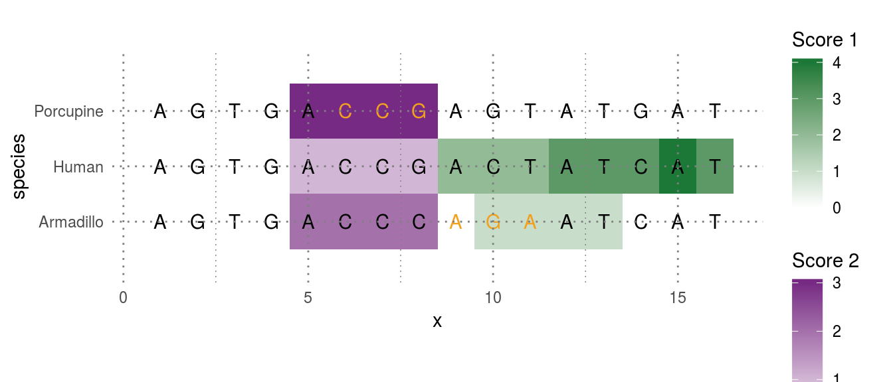
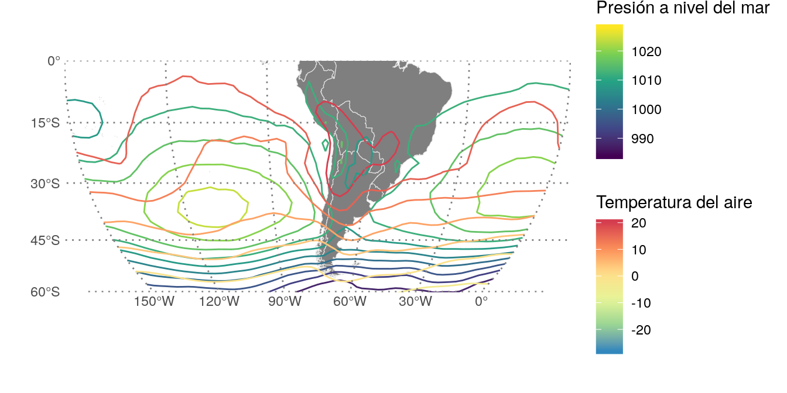

Múltiples escalas de colores en ggplot2
In English: Multiple color (and fill) scales with ggplot2tl;dr: Esta funcionalidad está ahora en el paquete ggnewscale! 📦
En este gist está la versión origial del código.
Un dolor importante para algunos usuarios de ggplot2 es la imposibilidad de usar más de una escala para cada tipo de parámetro estético. Una búsqueda en StackOverflow da como resultado múltiples preguntas:
Pero ninguna respuesta tiene una solución realmente satisfactoria; la mayoría son del tipo “no se puede, pero esta es otra forma de graficar tus datos”.
Tener varias escalas distintas para el mismo parámetro estético tiene riesgos, pero también beneficios. Cuando las escalas son bien distintas, permiten condensar más información en un mismo gráfico, facilitando la visualización de interacciones entre distintas variables. En ciencias de la atmósfera, por ejemplo, es muy habitual graficar temperatura y presión con líneas de contorno usando distintas escalas de colores.
Recientemente, gracias a un aporte de Claus Wilke, ggplot2 permite usar “parámetros estéticos no estándar”. Por ejemplo, se puede hacer scale_color_continuous(aesthetics = "fill") para especificar la escala del fill. Esto, junto con el uso de ggplot_add() para “sumarle” cualquier elemento a un objecto de ggplot2 (gracias a Hiroaki Yutani por su post!), permite hacer algunas triquiñuelas para agregar múltiples escalas de color (o fill, o lo que sea).
Déjenme ilustrar con un ejemplo sacado de esta pregunta de StackOverflow:
ggplot(pd[pd$score1 != 0,], aes(x=x, y=species)) +
geom_tile(aes(fill =score1)) +
scale_fill_gradient2("Score 1", limits = c(0, 4),
low = "#762A83", mid = "white", high = "#1B7837") +
new_scale("fill") +
geom_tile(aes(fill = score2), data = subset(pd, score2 != 0)) +
scale_fill_gradient2("Score 2", limits = c(0, 3),
low = "#1B7837", mid = "white", high = "#762A83") +
geom_text(data=pd, aes(label = letters, color = factor(change))) +
scale_color_manual("Change", values = c("black", "#F2A11F"),
labels = c("None", "Some")) +
coord_fixed(ratio = 1.5, xlim=c(0.5,16.5), ylim=c(0.5, 3.5))

Cómo funciona
El código es un tanto largo y tedioso para ponerlo en un artículo (pueden encontrarlo en este gist) así que acá voy a hablar de la parte más importante.
Primero, la función new_scale() no hace nada. Sólo crea un objeto de clase new_aes que no es más que un vector de texto con las escalas “nuevas”.
new_scale <- function(new_aes) {
structure(ggplot2::standardise_aes_names(new_aes), class = "new_aes")
}
La magia está en el +. Al sumar objectos de ggplot, se usa la función genérica ggplot_add(). Este es el método para los objectos de clase new_aes.
ggplot_add.new_aes <- function(object, plot, object_name) {
plot$layers <- lapply(plot$layers, bump_aes, new_aes = object)
plot$scales$scales <- lapply(plot$scales$scales, bump_aes, new_aes = object)
plot$labels <- bump_aes(plot$labels, new_aes = object)
plot
}
Lo que hace es agarrar cada capa, escala y etiqueta y cambiarle el nombre de los parámetros estéticos; efectivamente les agrega la palabra “_new” de manera que el “color” pasa a ser “color_new”. Hay que hacer un poco de cirugía interna mínimamente invasiva (la laparoscopía de la programación) para que los geoms no se vuelvan locos al recibir un data frame con una columna llamada “color_new” en vez de “color”.
Hay varias formas de hacer lo mismo y podrán ver que el proyecto pasó por varias iteraciones. Todavía no estoy 100% de que esta forma sea totalmente amigable y sería genial recibir un poco de feedback de la comunidad 🤞.
Ejemplo real
¿Para qué sirve todo esto en definitiva? Bueno, como decía antes, una posibilidad es la de graficar temperatura y presión en un mismo mapa usando dos escalas distintas.
library(metR)
library(magrittr)
time <- "1998-01-01"
# Temperatura y presión a nivel del mar para el 1° de enero de 1998
atmos <- ReadNetCDF("~/DATOS/NCEP Reanalysis/air.mon.mean.nc",
subset = list(level = 850,
time = time)) %>%
.[, slp:= ReadNetCDF("~/DATOS/NCEP Reanalysis/slp.mon.mean.nc",
subset = list(time = time), out = "vector")] %>%
.[, lon := ConvertLongitude(lon)]
ggplot(atmos, aes(lon, lat)) +
geom_world() +
geom_contour(aes(z = slp, color = ..level..), binwidth = 4) +
scale_color_viridis_c("Presión a nivel del mar") +
new_scale_color() + # lo mismo que `new_scale("color")`
geom_contour(aes(z = air, color = ..level..), binwidth = 4) +
scale_color_distiller("Temperatura del aire", palette = "Spectral") +
scale_x_longitude(limits = c(-150, 0)) +
scale_y_latitude(ticks = 15) +
ggalt::coord_proj("+proj=moll +lon_0=-75",
ylim = c(-60, 0), xlim = c(-150, 0))

Observar la relación entre la presión y la temperatura permite analizar procesos del crecimiento de las perturbaciones de la atmósfera.
Por supuesto, un gran poder conlleva una gran responsabilidad 🕸. Mezclar muchas escalas no es para cualquiera y debe ser usado bien y sólo si es absolutamente necesario. Siempre conviene pensar si no hay una mejor manera de mostrar lo mismo.
ggplot2 nunca deja de maravillarme. No sólo es un paquete poderosísimo para hacer toda clase gráficos de una manera estúpidamente simple y amigable, sino que es excepcionalmente extensible permitiendo este tipo de modificación por parte de los usuarios. ¡Larga vida a ggplot2 ✊!